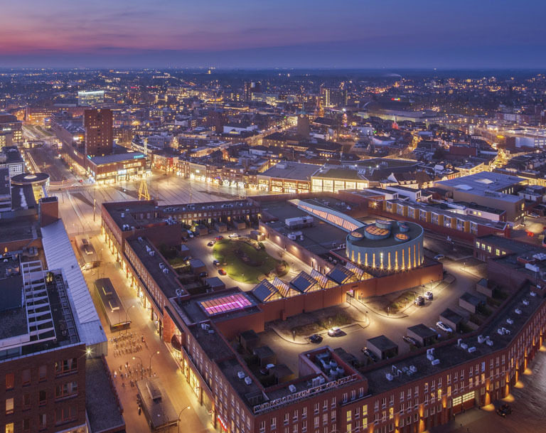

Enschede (Dutch pronunciation: [ˈɛnsxəˌdeː] (About this soundlisten), West Frisian: Ynskedee), also known as Eanske [ˈɛːnskə] in the local dialect of Twents, is a municipality and a city in the eastern Netherlands in the province of Overijssel and in the Twente region. The municipality of Enschede consisted of the city of Enschede until 1935, when the rural municipality of Lonneker, which surrounded the city, was annexed after the rapid industrial expansion of Enschede which began in the 1860s and involved the building of railways and the digging of the Twentekanaal.
